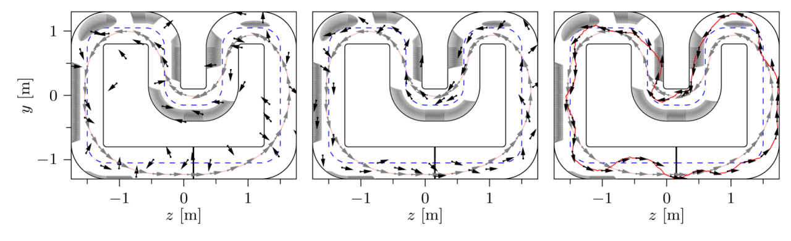
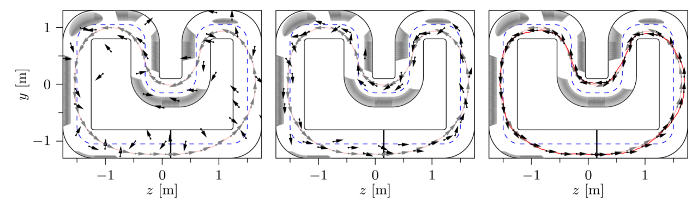
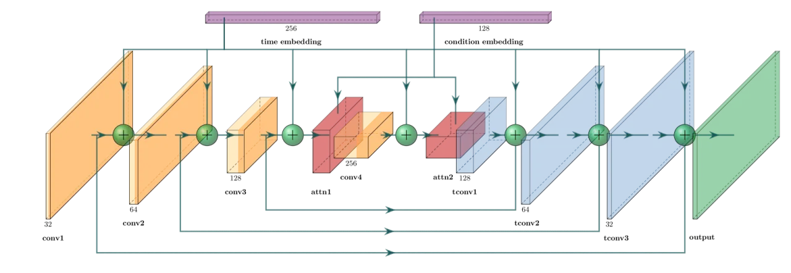
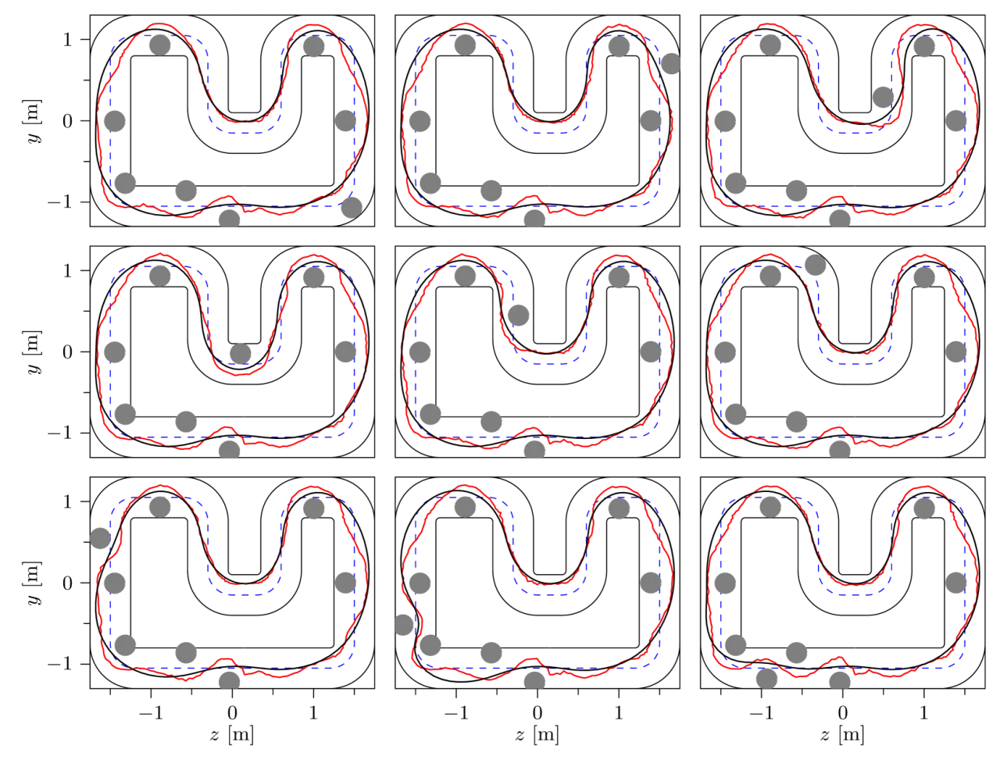
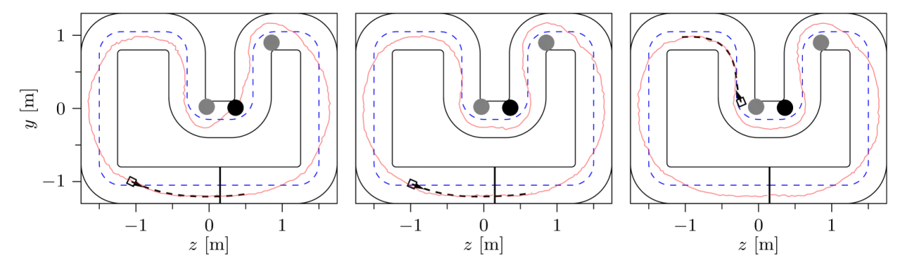
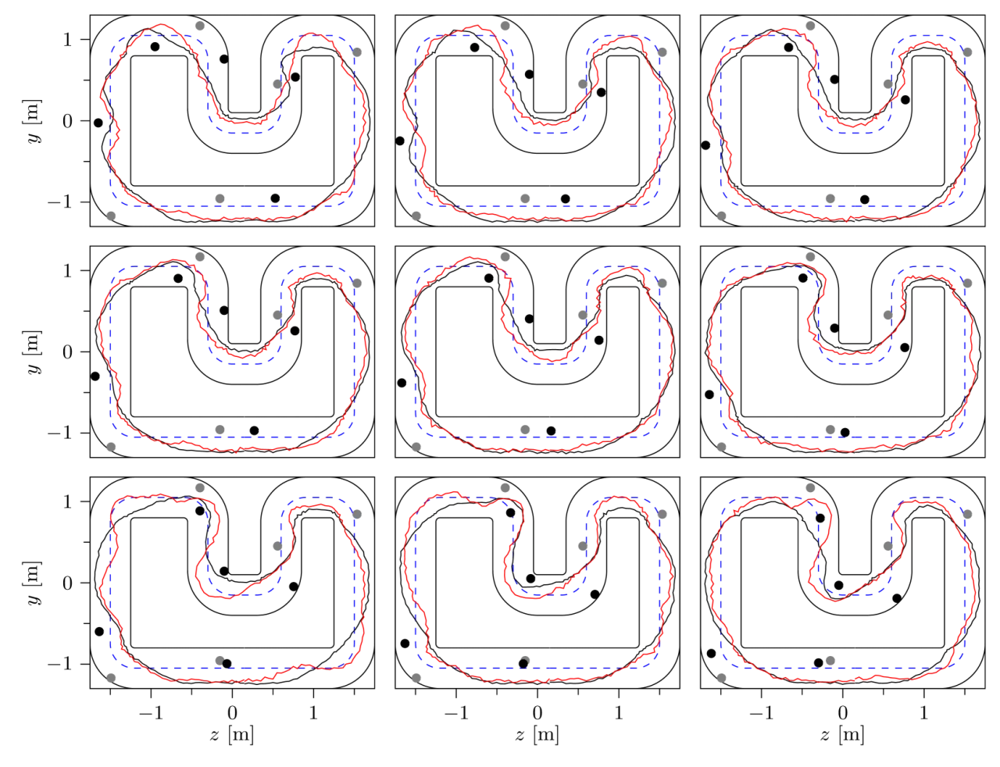

扩散模型能拟合复杂高维分布，却天生不懂"约束"，难以进安全攸关场景。CoDiG 把 barrier function 直接融进扩散去噪的 reverse SDE，在采样阶段用轻量的 barrier 梯度把轨迹"推"向可行域——无需重训网络、无需投影或外部模拟器。在微型自主赛车实机上，配合 warm-start 达到 2.5 Hz 实时重规划、100% 避障成功率。
扩散模型（diffusion models）在机器人领域潜力巨大，因为它能"capture complex, high-dimensional data distributions"。但纯靠数据训练的模型缺乏 constraint-awareness：面对分布外场景，采样出的轨迹可能碰撞障碍或动力学不可行，因此难以部署到安全攸关任务。已有做法要么在训练期塞入大量满足约束的数据（成本高、泛化差），要么在推理期做投影 / 外部校正（计算昂贵）。
"their lack of constraint-awareness limits their deployment in safety-critical applications." —— CoDiG 的目标：在采样时用 barrier 梯度增广 score，无需 projections、辅助模型或 simulators。


CoDiG 的核心思路：不改动底层神经网络，只在反向扩散过程里把 barrier function 的梯度加进 score，从而把采样引向"约束满足"的输出。它是 data-efficient、general-purpose 的框架，也能跨任务泛化。
把"满足约束 C"的条件分布写成对 score 的修正：
∇log p_t(x_t|C) = ∇log p_t(x_t) − γ_t ∇V(x_t; C)（Eq. 5）。其中 barrier function V 在不可行区域取大值、在可行区域取 0。据此改写反向扩散：
dx_t = β(t)[−x_t − (1+η)(∇log p_t(x_t) − γ_t∇V(x_t;C))]dt + η√(2β(t)) dw̃_t（Eq. 6）。
参数 η ∈ [0,1] 加速收敛；权重 γ_t 按调度从 0 逐步增大——早期让模型自由去噪，后期再逐步施加约束。赛车任务中 V 由"避障项 + 惩罚偏离 nominal time-optimal 轨迹的二次项"组成（Eq. 7）。
常规每次都从高斯噪声重新采样，需要约 1000 步去噪、太慢。Warm-start 改为对上一次轨迹加少量噪声再去噪，把步数从 1000 降到约 50，既实现实时重规划、又保持时间上的连续性（temporal consistency）。这把采样频率从 0.25 Hz 提到 2.5 Hz。

平台：自建的微型自主赛车 + 缩比赛道 + motion capture 系统，推理在 NVIDIA RTX 4090 上。数据：先解 time-optimal control 得到 100 条专家轨迹（约 16 小时计算），在安全区域加冗余障碍增广到 10,000 条，最终以 Frenet 坐标系（横向位移 ŷ、航向角 φ̂）下的 80 条轨迹训练。生成的轨迹交给 tracking MPC (TMPC) 执行。
| 指标 | Without warm-start | CoDiG (warm-start) |
|---|---|---|
| 去噪步数 | ~1000 | ~50 |
| 采样 / 重规划频率 | 0.25 Hz | 2.5 Hz |
| 实机避障成功率 | — | 100%（5 trials × 15 laps，10 种障碍配置） |


对比同一障碍配置下"标准 500 步"与"partial diffusion 50 步（warm-start）"生成的参考轨迹（Fig. 6）：warm-start 的轨迹更粗糙、更保守，但换来了稳定性与实时性。图中灰圈为静态障碍、黑圈为动态障碍。训练侧的消融（Fig. 5）则比较了不同输入模态与 noise schedule 下的收敛表现。

为了把去噪步数从 1000 降到 50，warm-start 生成的轨迹 profile 更粗糙、路径更保守——这是实时性与轨迹精细度之间的直接权衡。
barrier function V 需针对具体任务（如赛车避障）设计。作者认为相比数据采集成本这部分开销可忽略，但它仍是把框架迁到新任务时的一项人工设计负担。
论文主要展示 CoDiG 自身的有效性与消融，未给出与 projection / 外部校正等其他推理期约束方法在同一实机上的头对头定量比较。